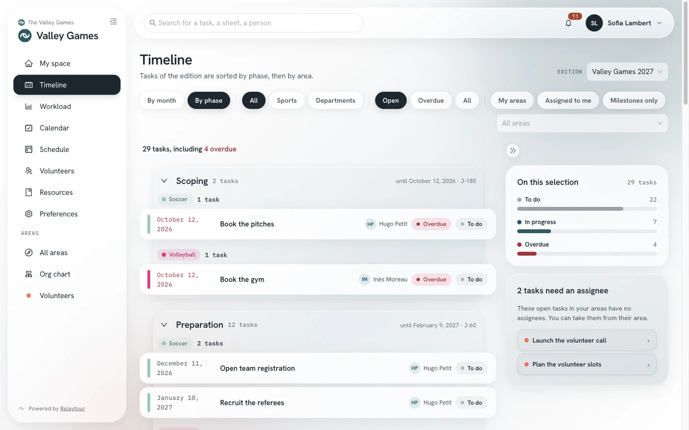
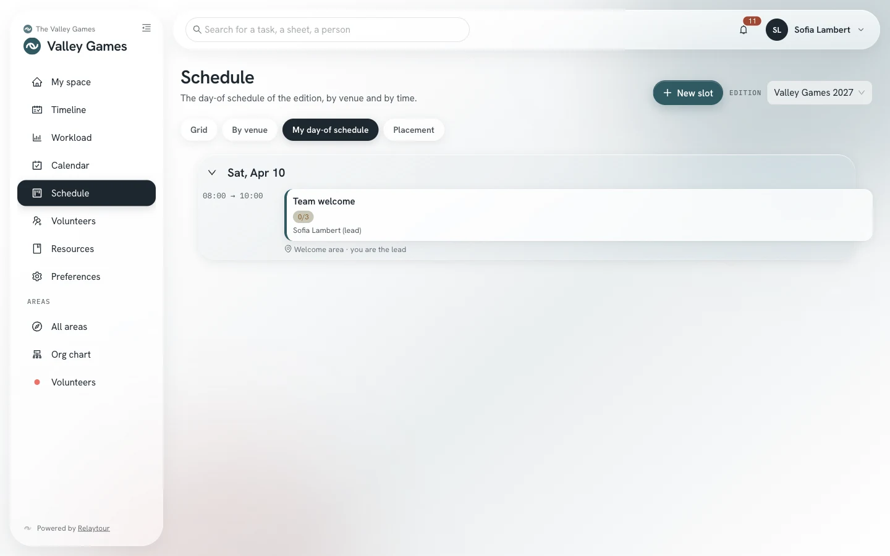

An association organizes a weekend of sports meetings every year. This use case follows one edition, from its creation to its review.
This use case shows one path among others. Each step points to the user guide that describes the screen in detail.
The case
One weekend, three sports and four departments
The Valley Games, the sample organization of Relaytour, bring together soccer, volleyball and running teams every June. Four departments prepare the event for all the sports: coordination, volunteers, logistics and communication.
About fifteen coordinators share these areas. On the day, volunteers without an account help on the fields, at the welcome desk and at the snack bar.
Before you start
What you set up
An organization admin creates the activity. An activity admin then sets its kind, its groups, its phases and its modules. The “First steps” list in My space guides these settings.
The activity and its areas
/<activity>/admin/activites
“Event” kindThe period is then called an “edition” on every screen.
Sport and department groupsThe sports carry the competitions. The departments carry the work shared by all the sports.
One area per sport and per departmentEach area receives a target headcount, for example two people per sport. The starter template of the first steps offers these areas, with their task templates and their sheets.
Calendar and Volunteers modulesThe calendar holds the meetings and the key dates. The Volunteers module opens volunteer calls.
PhasesThe four default phases are enough for a first edition. You adapt them to your own pace later. They are called Launch, Preparation, Final adjustments, Execution and review.

The tasks of an edition grouped by phase, in the sample organization.
The timings below are indicative. They count back from the first day of the edition.
1. Six months before: open the edition
An activity admin creates the edition and carries over the tasks of the previous one. Each due date keeps its gap with the first day. A first edition starts from the task templates.
The admins set the target headcount of each area and appoint people. Interests and the public form complete the team. Each area receives a main contact.
The admins place the key dates and a monthly team check-in in the global calendar. The next team check-in sets the priorities that each person reads in My space.
Each sport describes its slots: the matches, the welcome, the award ceremony. A slot states the helpers wanted and the public instructions for volunteers.
On the day, each person of the team finds their places in the “My day-of schedule” view of the schedule. The app installed on the phone opens without an address bar, like any other app.

The “My day-of schedule” view, in the sample organization.
The Install the app user guide describes how to add the organizer workspace to the home screen.
Good practices
Three habits that last from one edition to the next
A sheet for each recurring role
Each role that comes back every year deserves its own sheet. The person who takes it over finds the steps, the role contacts and the known pitfalls there.
Shared tasks for common work
The coordination creates a shared task, for example “Send the list of teams”. Each sport receives it with its own status. The coordination follows the whole from a single task.
A team check-in every month
A regular team check-in sets the pace of the preparation. Before each check-in, each person finds their priorities in My space. The “Workload” page shows what each person carries.
Keep it simple
What you do not need at first
The “Ranking” module is optional. Turn it on only if the team wants it.
The “Documents” module requires the association to connect its cloud provider. The sheets are enough for a first edition.
The fine settings of phases, of the org chart and of notifications can wait for the second edition.